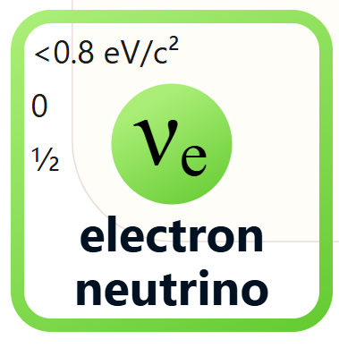

Image Credit:Energy Wave Theory
< Back
The electron neutrino is one of the three types of neutrinos in the Standard Model of particle physics.

Electron neutrinos are produced in beta decay and are involved in various particle interactions. Interestingly, neutrinos 'cycle' through the three types during their lifetimes.
Image Credit:Energy Wave Theory